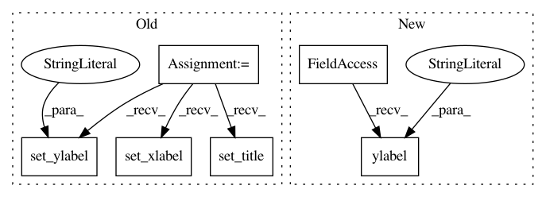

4f1e7f2f936bf5f3e6d1da8d8be843dc3273fe67,examples/1d/plot_filters.py,,,#,17
Before Change
axs[k].plot(np.arange(T)/T, psi_f[0], "b")
axs[k].set_xlim(0, 0.5)
axs[k].set_ylim(0, 1.2)
axs[k].set_xlabel("\omega")
axs[k].set_ylabel("\hat\psi_j(\omega)")
axs[k].set_title("Q = {}".format(Qs[k]))
fig.suptitle(("Fourier transforms of wavelets for all scales j with the "
"corresponding lowpass filter."))
After Change
plt.xlim(0, 0.5)
plt.ylim(0, 1.2)
plt.xlabel(r"$\omega$", fontsize=18)
plt.ylabel(r"$\hat\psi_j(\omega)$", fontsize=18)
plt.title("Second-order filters (Q = 1)", fontsize=18)
//////////////////////////////////////////////////////////////////////////////////////////////////////////////////////////////////////////////////////////////
// Display the plots!
In pattern: SUPERPATTERN
Frequency: 3
Non-data size: 6
Instances
Project Name: kymatio/kymatio
Commit Name: 4f1e7f2f936bf5f3e6d1da8d8be843dc3273fe67
Time: 2018-11-21
Author: janden@flatironinstitute.org
File Name: examples/1d/plot_filters.py
Class Name:
Method Name:
Project Name: NeuromorphicProcessorProject/snn_toolbox
Commit Name: 069378b414de5ff95cd0f5bd4024e82f03862832
Time: 2019-04-22
Author: bodo.rueckauer@intel.com
File Name: snntoolbox/simulation/plotting.py
Class Name:
Method Name: plot_param_sweep
Project Name: NeuromorphicProcessorProject/snn_toolbox
Commit Name: 89333926ae6c0dbc56c97bab30812ac461fdc7fa
Time: 2019-07-11
Author: bodo.rueckauer@intel.com
File Name: snntoolbox/simulation/plotting.py
Class Name:
Method Name: plot_param_sweep